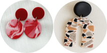

Taller personalizado

4-6 personas
Si sois entre 4 y 6 personas, personalizad vuestro taller en la web a vuestro gusto. Nosotr@s os contactaremos para elegir la fecha que mejor os encaje.
Taller de pendientes
Técnicas de terracota o marmolado
Plazas disponibles: 6
En este taller aprenderás a crear pendientes únicos usando arcilla polimérica con técnicas de terracota o marmolado. Ideal para principiantes y personas creativas.